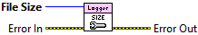

Error In describes error conditions that occur before this node runs. This input provides standard error in functionality.
Sets the maximum file size for the default log file before initiating a rollover event, where a new log file is created automatically.
If the current log file size is greater or equal to this value after writing the previous logging statement, then the file is closed and a new log file is created. The new log file will have a file name using the ISO 8601 timestamp format. It is recommended to keep the file size less than 20MB so that log files can be easily shared via email with peers. Many email providers limit attachments to under 20MB.

|
|
Error In describes error conditions that occur before this node runs. This input provides standard error in functionality. |
|
|
File Size is the maximum file size in bytes for a log file. |
|
|
Error Out contains error information. This output provides standard error out functionality. |